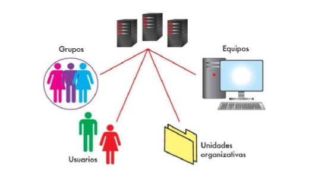
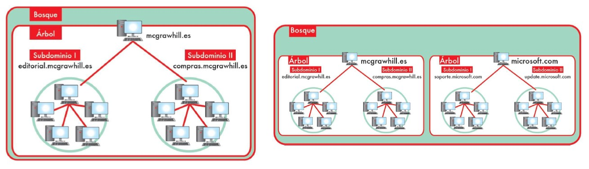
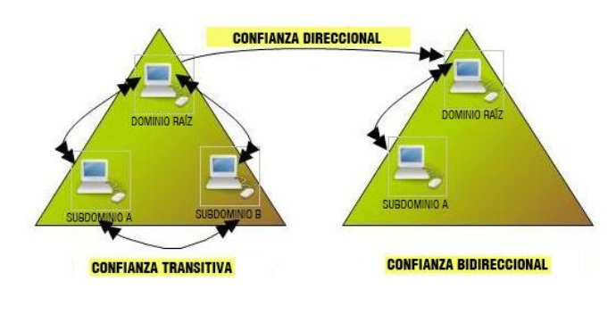
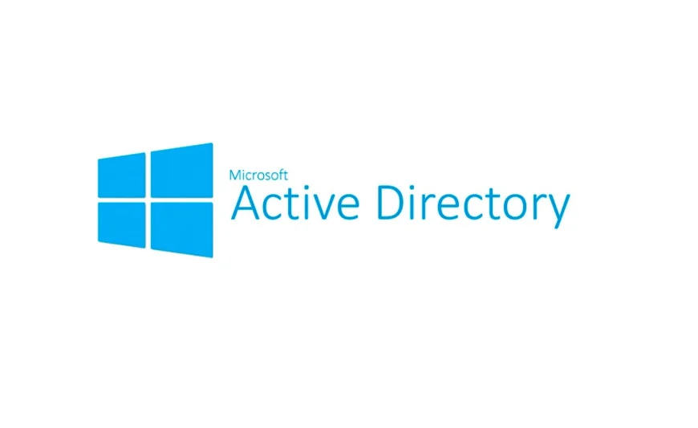
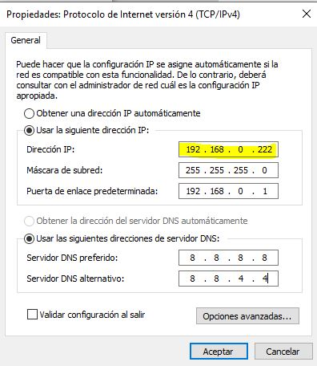
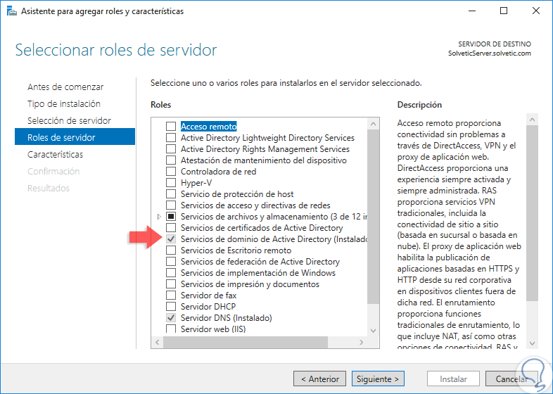
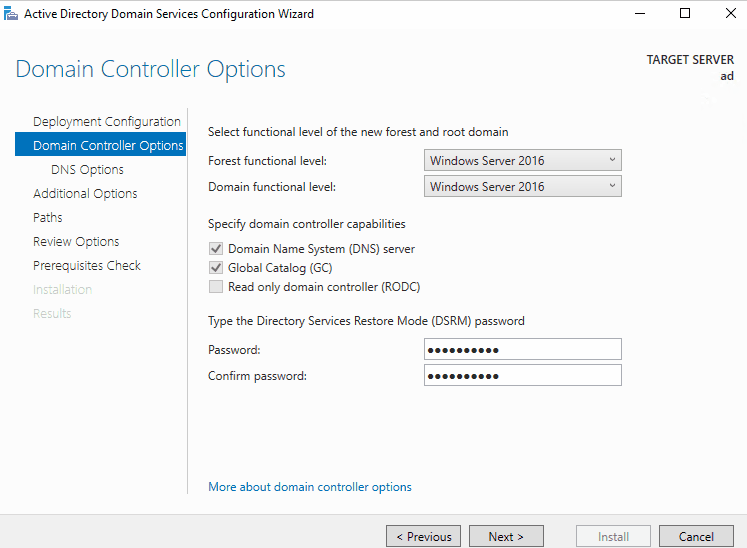
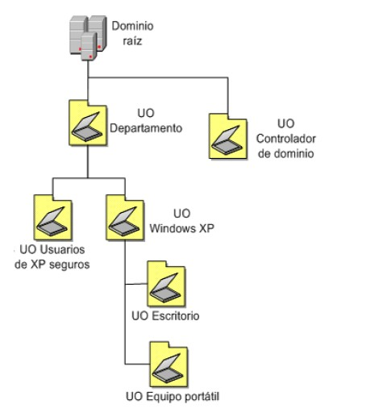
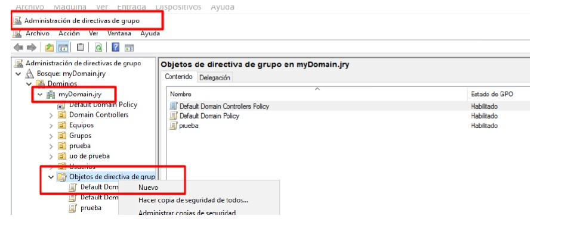

¿Qué es un servicio de directorio?
Un servicio de directorio es una base de datos especializada que almacena y organiza información sobre los recursos de una red, como usuarios, equipos, grupos y políticas. Permite gestionar el acceso y la seguridad de manera centralizada, facilitando la administración de grandes entornos informáticos. la información de usuarios, equipos y recursos dentro de una red.
- Autenticación: Verifica la identidad de los usuarios.
- Autorización: Controla los permisos y accesos.
- Centralización: Todo se gestiona desde un único punto.
- Estructura jerárquica: Organización en forma de árbol.
Elementos del servicio de directorio

Un servicio de directorio se compone de objetos, cada uno con atributos que describen sus propiedades. Estos objetos pueden ser usuarios, grupos, equipos, impresoras, etc., y se organizan en una estructura jerárquica.
- Objetos: Usuarios, grupos, equipos, impresoras…
- Atributos: Nombre, correo, descripción, etc.
- Clases: Tipos de objetos permitidos.
- DN (Distinguished Name): Ruta completa del objeto en la jerarquía.
Estructura jerárquica

Active Directory organiza sus recursos en forma de árbol jerárquico:
- Dominio: Unidad principal de administración.
- Árbol: Conjunto de dominios relacionados.
- Bosque: Conjunto de árboles con configuración común.
- OU: Contenedores para organizar usuarios y equipos.
El dominio y sus funciones
Un dominio define límites administrativos, de seguridad y control dentro de una red basada en Active Directory.
- Autenticación centralizada de usuarios y equipos.
- Aplicación de políticas de grupo (GPO).
- Control de permisos y recursos compartidos.
- Relaciones de confianza con otros dominios.
Relaciones de confianza entre dominios

Las relaciones de confianza permiten que usuarios de un dominio accedan a recursos de otro.
- Unidireccionales: A confía en B, pero no al revés.
- Bidireccionales: Confianza mutua.
- Explícitas: Creación manual.
- Implícitas: Automáticas dentro del mismo bosque.
- Transitivas: La confianza se propaga entre dominios.
Delegación de autoridad
La delegación permite asignar a un usuario o grupo permisos administrativos dentro de una parte concreta del dominio.
- Delegar creación y gestión de usuarios.
- Permitir reinicio de contraseñas.
- Administrar equipos dentro de una OU.
- Asignar tareas sin conceder control total del dominio.
Instalación de Active Directory

Para instalar Active Directory en un servidor Windows, se deben seguir estos pasos:
- Asignar IP estática y nombre al servidor.
- Instalar rol AD DS desde el Administrador del servidor.
- Promocionar a controlador de dominio.
- Configurar DNS, NetBIOS y DSRM.
1. Asignar IP estática
Es fundamental asignar una dirección IP estática al servidor para garantizar su accesibilidad y estabilidad en la red.
- Acceder a la configuración de red.
- Seleccionar la conexión de red y abrir propiedades.
- Configurar IPv4 con dirección, máscara, puerta de enlace y DNS.

2. Instalar rol AD DS
El rol AD DS (Active Directory Domain Services) es el componente esencial para convertir un servidor en un controlador de dominio.
- Acceder al Administrador del servidor.
- Seleccionar “Agregar roles y características”.
- Elegir el rol “Servicios de dominio de Active Directory”.
- Completar la instalación y reiniciar si es necesario.

3. Promocionar a controlador de dominio
Promocionar el servidor a controlador de dominio implica configurar el dominio, el bosque y las opciones de seguridad.
- Seleccionar “Promocionar este servidor a controlador de dominio”.
- Elegir “Agregar un nuevo bosque” e ingresar el nombre del dominio.
- Configurar opciones de nivel funcional, contraseña DSRM y DNS.
- Completar la promoción y reiniciar el servidor.

4. Configurar el dominio
Tras la promoción, es necesario configurar el dominio para asegurar su correcto funcionamiento y seguridad.
- Configurar zonas DNS para el dominio.
- Crear unidades organizativas (OU) para organizar recursos.
- Definir políticas de grupo (GPO) para gestionar configuraciones.
- Agregar usuarios y equipos al dominio.
Validación del dominio
Tras la instalación, deben realizarse pruebas para asegurar que el dominio funciona correctamente.
- Comprobar la consola “Usuarios y equipos de Active Directory”.
- Verificar la respuesta del servidor DNS.
- Unir un equipo al dominio como prueba.
- Ejecutar
dcdiag,repadmin,gpresult.
Unidades Organizativas (OU)

Las OU permiten organizar usuarios, equipos y grupos según la estructura de la empresa o centro educativo. (Ej: Departamento de Informática, Ciclo Formativo de Grado Superior, etc.)
- Agrupar usuarios por departamento.
- Agrupar equipos por aula o ciclo.
- Delegar control por unidad específica.
- Aplicar GPO específicas a una zona concreta.
Políticas de Grupo (GPO)

Las GPO permiten configurar automáticamente el comportamiento de usuarios y equipos dentro del dominio.
- Restringir funciones del sistema.
- Configurar normas de contraseñas.
- Aplicar fondo, accesos o redirecciones de carpetas.
- Instalar software de forma automática.
Herramientas administrativas
Existen diversas herramientas para gestionar y administrar un dominio Active Directory, cada una con funciones específicas para facilitar la administración de usuarios, equipos, políticas y servicios relacionados.
- dsa.msc: Usuarios y Equipos de Active Directory.
- gpmc.msc: Administración de GPO.
- dssite.msc: Sitios y Servicios de AD.
- DNS Manager: Administración del servicio DNS.
- PowerShell: Gestión avanzada mediante scripting.
Diagnóstico y resolución de errores
Para mantener un dominio saludable, es fundamental realizar diagnósticos periódicos y resolver errores comunes que puedan surgir en el entorno de Active Directory.
- Visor de eventos: Errores de inicio de sesión y servicios.
- dcdiag: Análisis del controlador de dominio.
- repadmin: Estado de la replicación.
- gpresult: Políticas aplicadas a un usuario/equipo.